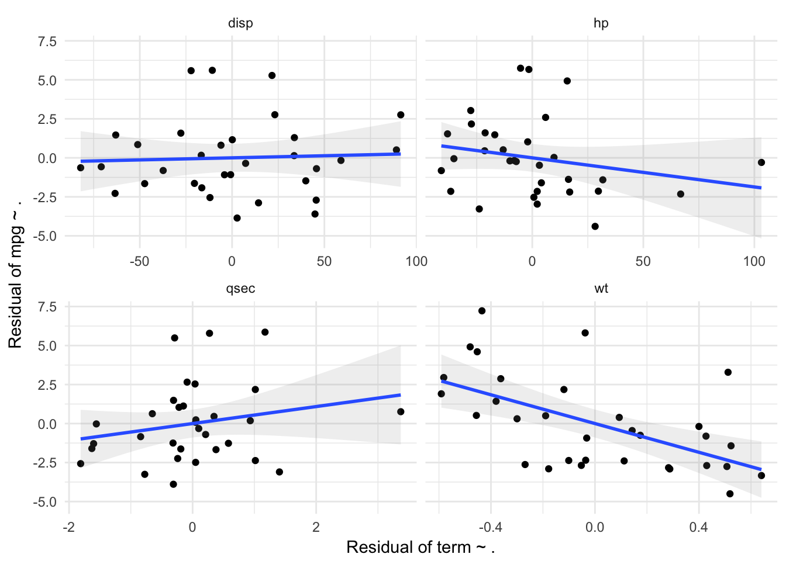

Assignments for Generalized Linear Methods
Wouter van Amsterdam
2018-03-05
Last updated: 2018-03-08
Code version: 1173d6b
Setup
library(dplyr)
library(data.table)
library(magrittr)
library(purrr)
library(here) # for tracking working directory
library(ggplot2)
library(epistats)
library(broom)Day 1
1 Throat
Analyze the throat dataset (throat.txt or throat.sav) in R, SPSS, or both.
a.
Examine the relation between sore throat and duration of surgery in three ways: 1) make a scatterplot of sore throat by duration of surgery; 2) make histograms of duration split by sore throat; and 3) make a plot of proportion having sore throat by duration of surgery (you’ll need to categorize duration).
In a survey of 35 patients having surgery with a general anesthetic, patients were asked whether or not they experienced a sore throat (throat=0 for no, throat=1 for yes). The duration of the surgery in minutes was also recorded, and the type of device used to secure the airway (0 = laryngeal mask airway; 1=tracheal tube)
throat <- read.table(here("data", "throat.txt"), sep = ";", header = T)
str(throat)'data.frame': 35 obs. of 4 variables:
$ Patient: int 1 2 3 4 5 6 7 8 9 10 ...
$ D : int 45 15 40 83 90 25 35 65 95 35 ...
$ T : int 0 0 0 1 1 1 0 0 0 0 ...
$ Y : int 0 0 1 1 1 1 1 1 1 1 ...Rename variables for easier interpretation
throat %<>%
transmute(
patient = Patient,
duration = D,
sore_throat = as.logical(`T`),
tracheal_tube = as.logical(Y))Scatterplot
throat %>%
ggplot(aes(x = duration, y = sore_throat)) +
geom_point()
Histograms
throat %>%
ggplot(aes(x = duration, fill = sore_throat)) +
geom_histogram()Proportion sore throats by category of duration.
Let’s divide duration in 5 categories
Calculate mean duration by quantile for proper plotting
throat %<>%
mutate(duration_group = quant(duration, n.tiles = 5))
throat_grouped <-throat %>%
group_by(duration_group) %>%
summarize(mean_duration = mean(duration),
prop_throat = mean(sore_throat))Plot them
throat_grouped %>%
ggplot(aes(x = mean_duration, y = prop_throat)) +
geom_point() +
lims(y = c(0,1))Now improved with errorbars
In epistats ther is a function that returns a proportion with a confidence interval for logical variables (without using n = length(x), x = sum(x))
Group the data by duration group using nest from tidyr Perform the confidence interval estimation in each subset, pull out the proportions and confidence intervals.
require(tidyr)
throat %<>%
mutate(duration_group = quant(duration, n.tiles = 5))
throat_nested <- throat %>%
group_by(duration_group) %>%
nest() %>%
mutate(
mean_duration = map(data, function(data) mean(data$duration)),
prop = map(data, function(data) binom.confint_logical(data$sore_throat))) %>%
unnest(prop, mean_duration)
throat_nested %>%
ggplot(aes(x = mean_duration, y = mean)) +
geom_errorbar(aes(ymin = lower, ymax = upper)) +
lims(y = c(0,1)) +
theme_minimal() + labs(y = "proportion sore throat")
b.
Fit a logistic regression model to explain the probability of sore throat as a function of duration of surgery. SPSS users: do this once using the Regression, Binary Logistic menu option, and a second time using the Generalized Linear Model menu option. Compare the results from both “methods” for estimating a logistic regression; are there differences in the parameter estimates, standard errors or maximum likelihood?
fit <- glm(sore_throat ~ duration, data = throat, family = binomial(link = "logit"))
summary(fit)
Call:
glm(formula = sore_throat ~ duration, family = binomial(link = "logit"),
data = throat)
Deviance Residuals:
Min 1Q Median 3Q Max
-1.189 -1.149 -1.131 1.204 1.225
Coefficients:
Estimate Std. Error z value Pr(>|z|)
(Intercept) -0.136898 0.658830 -0.208 0.835
duration 0.001734 0.012292 0.141 0.888
(Dispersion parameter for binomial family taken to be 1)
Null deviance: 48.492 on 34 degrees of freedom
Residual deviance: 48.472 on 33 degrees of freedom
AIC: 52.472
Number of Fisher Scoring iterations: 3c.
Add the fitted logistic curve from (d) to one of the graphs in (a) (SPSS users: save the predicted probabilities from the model; use either a multiple line graph or an overlay scatterplot).
throat_nested %<>%
mutate(pred = predict(fit, newdata = data.frame(duration = mean_duration),
type = "response"))
throat_nested %>%
ggplot(aes(x = mean_duration, y = mean)) +
geom_errorbar(aes(ymin = lower, ymax = upper)) +
geom_line(aes(y = pred), lty = 2) +
lims(y = c(0,1)) +
theme_minimal() + labs(y = "proportion sore throat")2. Throat 2
Continue with the analysis of the throat dataset in R, SPSS, or both (SPSS users: use the GLM menu for the modelling):
a.
Examine the relation between sore throat and device, and between device and duration.
throat %>%
select(sore_throat, tracheal_tube, duration) %>%
mutate_if(is.logical, as.factor) %>%
GGally::ggpairs()Patients without a tracheal tube seem to have a sore throat more often.
Patients with a tracheal tube seem to have a longer duration
b.
Fit a logistic regression model to explain the probability of sore throat as a function of type of device. Get the Wald and profile likelihood
fit2 <- glm(sore_throat ~ tracheal_tube, data = throat, family = binomial(link = "logit"))
summary(fit2)
Call:
glm(formula = sore_throat ~ tracheal_tube, family = binomial(link = "logit"),
data = throat)
Deviance Residuals:
Min 1Q Median 3Q Max
-1.5353 -0.9508 -0.9508 0.8576 1.4224
Coefficients:
Estimate Std. Error z value Pr(>|z|)
(Intercept) 0.8109 0.6009 1.349 0.1772
tracheal_tubeTRUE -1.3705 0.7467 -1.836 0.0664 .
---
Signif. codes: 0 '***' 0.001 '**' 0.01 '*' 0.05 '.' 0.1 ' ' 1
(Dispersion parameter for binomial family taken to be 1)
Null deviance: 48.492 on 34 degrees of freedom
Residual deviance: 44.889 on 33 degrees of freedom
AIC: 48.889
Number of Fisher Scoring iterations: 4confint(fit2) 2.5 % 97.5 %
(Intercept) -0.310979 2.11680249
tracheal_tubeTRUE -2.929278 0.04379487Both Wald test and profile likelihood agree that tracheal tube is not significant.
c.
Fit the remaining models from the lecture and interpret the output.
fit2 <- glm(sore_throat ~ tracheal_tube + duration, data = throat, family = binomial(link = "logit"))
fit3 <- glm(sore_throat ~ duration * tracheal_tube, data = throat, family = binomial(link = "logit"))
summary(fit3)
Call:
glm(formula = sore_throat ~ duration * tracheal_tube, family = binomial(link = "logit"),
data = throat)
Deviance Residuals:
Min 1Q Median 3Q Max
-1.9459 -0.7546 -0.5331 0.7840 2.0107
Coefficients:
Estimate Std. Error z value Pr(>|z|)
(Intercept) 2.66116 1.49224 1.783 0.07453 .
duration -0.06208 0.04295 -1.445 0.14833
tracheal_tubeTRUE -5.52029 2.01592 -2.738 0.00617 **
duration:tracheal_tubeTRUE 0.10127 0.04791 2.114 0.03454 *
---
Signif. codes: 0 '***' 0.001 '**' 0.01 '*' 0.05 '.' 0.1 ' ' 1
(Dispersion parameter for binomial family taken to be 1)
Null deviance: 48.492 on 34 degrees of freedom
Residual deviance: 37.908 on 31 degrees of freedom
AIC: 45.908
Number of Fisher Scoring iterations: 4AIC(fit2, fit3) df AIC
fit2 3 49.10924
fit3 4 45.90770There seems to be a significant interaction between tracheal tube and duration, according to both the p-value from the fit summary and the AIC.
Without the tracheal tube, the duration of the procedure does not seem to matter. The tracheal tube itselve is protective for sore throat. For patients with a tracheal tube, increased duration is associated with higher odds of sore throat
3.
Optional in R: continue with the analysis of the throat dataset, and repeat the model diagnostics. For saving, “binning” and plotting the binned residuals, see the script provided.
plot(fit3)


Use binning (adapted from provided script)
throat %<>%
mutate(
residuals = residuals(fit3),
linpred = predict(fit3, type = "link")
)
throat %>%
mutate(pred_cat = quant(linpred, n.tiles = 10)) %>%
group_by(pred_cat) %>%
summarize(residuals = mean(residuals),
linpred = mean(linpred)) %>%
ggplot(aes(x = linpred, y = residuals)) +
geom_point()
This should be unstructured.
4
The R script GLM computer lab1 analyses.R contains the beginnings of an analysis of the ICU dataset (ICU.RData, ICU.sav). Use and expand on this script in R (or use SPSS) to answer the following questions. a. (SPSS users note: this is not entirely possible, see answers to 1a&c for compromise.) Examine the relation between status and systolic blood pressure (SYS). Try to make a graph of this relation, similar to the graph of status vs. age in the lecture notes (bottom left graph on slide 60). Compare this plot to the systolic blood pressure plot on slide 61 of the lecture notes. What is different in how this new plot has been made? b. Fit a logistic regression model using only systolic blood pressure (SYS) to predict status. What is the odds ratio for dying (status = dead) for a 10 unit increase in systolic blood pressure? c. What assumption does the model in 3(b) make about dying and SYS? Do you think that assumption is met? d. Examine the relation between status and level of consciousness (LOC) in a contingency table. What do you notice? What problems might this give in the model fitting? e. Fit a logistic regression model using LOC to predict status. Comment on the estimates and standard errors for the regression coefficients.
This dataset will be considered for further analysis on days 2 and 3.
# fit_all <- ...
# stepAIC(fit_all)
# check assumptions (binned deviance, by variable)This assignment was skipped due to time-limitations and it being discussed during the lecture.
5.
Can we predict birth weight using gestational age? Is the prediction the same for boys and girls? a. Use the dataset bwt_gestage.csv to answer these questions. Note: sex = 1 are the boys, sex = 2 are the girls. b. Interpret your findings. c. Fit the final model from (a) using both the lm() and glm() functions in R. Compare the parameter estimates and standard errors from the two methods of fitting a linear model. d. Repeat (c) using both the Regression, Linear and the Generalized Linear Models procedures in SPSS. Compare the parameter estimates and standard errors from the two methods of fitting a linear model. What do you notice?
6.
We wish to find factors that influence the probability that a low birth weight infant (<1500 g) will experience a germinal matrix hemorrhage. A sample of 100 low birth weight newborns was retrospectively collected in a hospital in Boston, MA. Factors possibly indicative of a germinal matrix hemorrhage were extracted from a chart review and included sex, head circumference, systolic blood pressure and gestational age of the infant, and whether the mother suffered from toxemia during the pregnancy. Use the dataset lowbwt.txt to predict the probability of hemorrhage. (Note: the dichotomous variables are defined as follows: sex=1 is a male, tox=1 is toxemia, grmhem=1 hemorrhage.) a. Start by describing the data, get a sense of the relations between the potential explanatory variables and the outcome. b. Construct a model to predict occurrence of germinal matrix hemorrhage. c. Interpret your findings.
7.
The dataset epilepsy in the R library HSAUR (or the SPSS file epilepsy.sav) contains data from a clinical trial on 59 patients suffering from epilepsy. Patients were randomized to groups receiving either an anti-epileptic drug or a placebo, in addition to standard chemotherapy. N.B. If you’re working in R and you’ve loaded the faraway library, unload it now! Otherwise you may end up with the wrong epilepsy data frame (both faraway and HSAUR contain data frames with different structures but the same name): detach(“package:faraway”). Get some information about this data frame by loading the HSAUR library and using help(epilepsy). This is data from a longitudinal trial; we will use only the data from the last two-week period. We are interested in whether the probability of seizure is higher in the treatment or control group in this period. a. Start by making a selection of the data for period 4 and making a new variable for seizure yes/no. b. Get some descriptive statistics for the data, get a sense of the relations between the potential explanatory variables and the dichotomous outcome seizure. c. What type of variable is seizure.rate? d. Give two reasons why a logistic regression model is not the most appropriate way to analyze this data.
Day 2
1.
The R script ICU analyses day 2.R contains the beginnings of an analysis of the ICU dataset (ICU.RData, ICU.sav). Use and expand on this script in R (or use SPSS) to answer the following questions.
Setup
# Analyses of throat and ICU datasets for day 2 GLM course
library(gmodels)
library(splines)
library(HSAUR)
load(here("data", "ICU.RData"))
str(ICU)'data.frame': 200 obs. of 22 variables:
$ ID : num 8 12 14 28 32 38 40 41 42 50 ...
$ STA : Factor w/ 2 levels "Alive","Dead": 1 1 1 1 1 1 1 1 1 1 ...
$ AGE : num 27 59 77 54 87 69 63 30 35 70 ...
$ AGECAT: num 30 60 80 50 90 70 60 30 40 70 ...
$ SEX : Factor w/ 2 levels "Male","Female": 2 1 1 1 2 1 1 2 1 2 ...
$ RACE : Factor w/ 3 levels "White","Black",..: 1 1 1 1 1 1 1 1 2 1 ...
$ SER : Factor w/ 2 levels "Medical","Surgical": 1 1 2 1 2 1 2 1 1 2 ...
$ CAN : Factor w/ 2 levels "No","Yes": 1 1 1 1 1 1 1 1 1 2 ...
$ CRN : Factor w/ 2 levels "No","Yes": 1 1 1 1 1 1 1 1 1 1 ...
$ INF : Factor w/ 2 levels "No","Yes": 2 1 1 2 2 2 1 1 1 1 ...
$ CPR : Factor w/ 2 levels "No","Yes": 1 1 1 1 1 1 1 1 1 1 ...
$ SYS : num 142 112 100 142 110 110 104 144 108 138 ...
$ HRA : num 88 80 70 103 154 132 66 110 60 103 ...
$ PRE : Factor w/ 2 levels "No","Yes": 1 2 1 1 2 1 1 1 1 1 ...
$ TYP : Factor w/ 2 levels "Elective","Emergency": 2 2 1 2 2 2 1 2 2 1 ...
$ FRA : Factor w/ 2 levels "No","Yes": 1 1 1 2 1 1 1 1 1 1 ...
$ PO2 : Factor w/ 2 levels "> 60","<= 60": 1 1 1 1 1 2 1 1 1 1 ...
$ PH : Factor w/ 2 levels ">= 7.25","< 7.25": 1 1 1 1 1 1 1 1 1 1 ...
$ PCO : Factor w/ 2 levels "<= 45","> 45": 1 1 1 1 1 1 1 1 1 1 ...
$ BIC : Factor w/ 2 levels ">= 18","< 18": 1 1 1 1 1 2 1 1 1 1 ...
$ CRE : Factor w/ 2 levels "<= 2.0","> 2.0": 1 1 1 1 1 1 1 1 1 1 ...
$ LOC : Factor w/ 3 levels "No Coma or Stupor",..: 1 1 1 1 1 1 1 1 1 1 ...
- attr(*, "variable.labels")= Named chr "Identification Code" "Status" "Age in Years" "Age Class" ...
..- attr(*, "names")= chr "ID" "STA" "AGE" "AGECAT" ...
- attr(*, "codepage")= int 1252a.
Examine the relation between status (STA) and type of admission (TYP).
CrossTable(ICU$TYP, ICU$STA, prop.c=FALSE, prop.t=FALSE, prop.chisq=FALSE)
Cell Contents
|-------------------------|
| N |
| N / Row Total |
|-------------------------|
Total Observations in Table: 200
| ICU$STA
ICU$TYP | Alive | Dead | Row Total |
-------------|-----------|-----------|-----------|
Elective | 52 | 2 | 54 |
| 0.963 | 0.037 | 0.270 |
-------------|-----------|-----------|-----------|
Emergency | 108 | 38 | 146 |
| 0.740 | 0.260 | 0.730 |
-------------|-----------|-----------|-----------|
Column Total | 160 | 40 | 200 |
-------------|-----------|-----------|-----------|
b.
Fit a logistic regression model using TYP to predict status. Express the results as OR and 95% CI.
icu.m1 <- glm(formula = STA ~ TYP, family = binomial(link = "logit"), data=ICU)
summary(icu.m1)
Call:
glm(formula = STA ~ TYP, family = binomial(link = "logit"), data = ICU)
Deviance Residuals:
Min 1Q Median 3Q Max
-0.7765 -0.7765 -0.7765 -0.2747 2.5674
Coefficients:
Estimate Std. Error z value Pr(>|z|)
(Intercept) -3.2581 0.7203 -4.523 6.08e-06 ***
TYPEmergency 2.2136 0.7446 2.973 0.00295 **
---
Signif. codes: 0 '***' 0.001 '**' 0.01 '*' 0.05 '.' 0.1 ' ' 1
(Dispersion parameter for binomial family taken to be 1)
Null deviance: 200.16 on 199 degrees of freedom
Residual deviance: 184.52 on 198 degrees of freedom
AIC: 188.52
Number of Fisher Scoring iterations: 5exp(coefficients(icu.m1)) (Intercept) TYPEmergency
0.03846155 9.14814450 exp(confint(icu.m1)) 2.5 % 97.5 %
(Intercept) 0.006293049 0.1235554
TYPEmergency 2.658796276 57.5739571c.
Fit two binomial models producing the Risk Ratio and Risk Difference, with their 95% CI.
# "relative risk" regression: link=log, family = binomial
icu.m2 <- glm(formula = STA ~ TYP, family = binomial(link = "log"), data=ICU)
summary(icu.m2)
Call:
glm(formula = STA ~ TYP, family = binomial(link = "log"), data = ICU)
Deviance Residuals:
Min 1Q Median 3Q Max
-0.7765 -0.7765 -0.7765 -0.2747 2.5674
Coefficients:
Estimate Std. Error z value Pr(>|z|)
(Intercept) -3.2958 0.6938 -4.750 2.03e-06 ***
TYPEmergency 1.9498 0.7077 2.755 0.00587 **
---
Signif. codes: 0 '***' 0.001 '**' 0.01 '*' 0.05 '.' 0.1 ' ' 1
(Dispersion parameter for binomial family taken to be 1)
Null deviance: 200.16 on 199 degrees of freedom
Residual deviance: 184.52 on 198 degrees of freedom
AIC: 188.52
Number of Fisher Scoring iterations: 6exp(coefficients(icu.m2)) (Intercept) TYPEmergency
0.03703704 7.02739702 exp(confint(icu.m2)) 2.5 % 97.5 %
(Intercept) 0.006254798 0.1099454
TYPEmergency 2.265999444 42.2886756# "risk difference" regression: link=identity, family = binomial
# Note: do not exponentiate coeff & CI
icu.m3 <- glm(formula = STA ~ TYP, family = binomial(link = "identity"), data=ICU)
summary(icu.m3)
Call:
glm(formula = STA ~ TYP, family = binomial(link = "identity"),
data = ICU)
Deviance Residuals:
Min 1Q Median 3Q Max
-0.7765 -0.7765 -0.7765 -0.2747 2.5674
Coefficients:
Estimate Std. Error z value Pr(>|z|)
(Intercept) 0.03704 0.02570 1.441 0.15
TYPEmergency 0.22324 0.04449 5.018 5.22e-07 ***
---
Signif. codes: 0 '***' 0.001 '**' 0.01 '*' 0.05 '.' 0.1 ' ' 1
(Dispersion parameter for binomial family taken to be 1)
Null deviance: 200.16 on 199 degrees of freedom
Residual deviance: 184.52 on 198 degrees of freedom
AIC: 188.52
Number of Fisher Scoring iterations: 2# confint(icu.m3)
confint.default(icu.m3) 2.5 % 97.5 %
(Intercept) -0.01333321 0.08740729
TYPEmergency 0.13604217 0.31043170For the identity link, likihood profiling for confidence intervals does not work. Possibly due to inadmissable values in the range of the profile.
d.
Fit two further binomial models using the probit link and the cloglog link.
# probit link
icu.m4 <- glm(formula = STA ~ TYP, family = binomial(link = "probit"), data=ICU)
summary(icu.m4)
Call:
glm(formula = STA ~ TYP, family = binomial(link = "probit"),
data = ICU)
Deviance Residuals:
Min 1Q Median 3Q Max
-0.7765 -0.7765 -0.7765 -0.2747 2.5674
Coefficients:
Estimate Std. Error z value Pr(>|z|)
(Intercept) -1.7862 0.3175 -5.625 1.85e-08 ***
TYPEmergency 1.1437 0.3367 3.397 0.000681 ***
---
Signif. codes: 0 '***' 0.001 '**' 0.01 '*' 0.05 '.' 0.1 ' ' 1
(Dispersion parameter for binomial family taken to be 1)
Null deviance: 200.16 on 199 degrees of freedom
Residual deviance: 184.52 on 198 degrees of freedom
AIC: 188.52
Number of Fisher Scoring iterations: 5# cloglog link
icu.m5 <- glm(formula = STA ~ TYP, family = binomial(link = "cloglog"), data=ICU)
summary(icu.m5)
Call:
glm(formula = STA ~ TYP, family = binomial(link = "cloglog"),
data = ICU)
Deviance Residuals:
Min 1Q Median 3Q Max
-0.7765 -0.7765 -0.7765 -0.2747 2.5674
Coefficients:
Estimate Std. Error z value Pr(>|z|)
(Intercept) -3.2770 0.7071 -4.634 3.58e-06 ***
TYPEmergency 2.0780 0.7257 2.864 0.00419 **
---
Signif. codes: 0 '***' 0.001 '**' 0.01 '*' 0.05 '.' 0.1 ' ' 1
(Dispersion parameter for binomial family taken to be 1)
Null deviance: 200.16 on 199 degrees of freedom
Residual deviance: 184.52 on 198 degrees of freedom
AIC: 188.52
Number of Fisher Scoring iterations: 6e.
Decide which link gives the best fitting model, based on deviance or AIC
AIC(icu.m1, icu.m2, icu.m3, icu.m4, icu.m5) df AIC
icu.m1 2 188.5246
icu.m2 2 188.5246
icu.m3 2 188.5246
icu.m4 2 188.5246
icu.m5 2 188.5246All have equivalent AIC.
list(icu.m1, icu.m2, icu.m3, icu.m4, icu.m5) %>%
map_dbl(deviance)[1] 184.5246 184.5246 184.5246 184.5246 184.5246All have equivalent deviance
2.
Repeat the analyses 1a-d for the continuous variable SYS, being systolic blood pressure.
The identity link required starting values to work
try(fit_id <- glm(STA ~ SYS, data = ICU, family = binomial(link = "identity"),
start = c(mean(ICU$STA == "Dead"), 0)))Warning: step size truncated due to divergence
Warning: step size truncated due to divergence
Warning: step size truncated due to divergence
Warning: step size truncated due to divergence
Warning: step size truncated due to divergence
Warning: step size truncated due to divergence
Warning: step size truncated due to divergence
Warning: step size truncated due to divergence
Warning: step size truncated due to divergence
Warning: step size truncated due to divergence
Warning: step size truncated due to divergence
Warning: step size truncated due to divergence
Warning: step size truncated due to divergenceWarning: glm.fit: algorithm did not convergeWarning: glm.fit: algorithm stopped at boundary valueThe rest we can do in one line
links = list("logit", "log", "probit", "cloglog")
fits <- links %>%
map(function(link) glm(STA ~ SYS, data = ICU, family = binomial(link = link)))
links <- c(links, "identity")
fits[[length(fits)+1]] <- fit_id
data.frame(link = unlist(links),
aic = map_dbl(fits, AIC),
deviance = map_dbl(fits, AIC)) link aic deviance
1 logit 195.3351 195.3351
2 log 193.5661 193.5661
3 probit 196.2581 196.2581
4 cloglog 194.5699 194.5699
5 identity 199.5667 199.5667a.
Decide which link now gives the best fitting model, based on deviance or AIC
The log link gives the lowest AIC, so this is the best fit.
b.
Discuss the difference with 1e
With this continous predictor, there is a difference in AICs between the models.
In the previous case with only a single binary predictor, there are only two possible values for the predicted probability of survival, regardless of the link function: \(\hat{p}_0\) for unexposed, \(\hat{p}_1\) for exposed. Each set of values for \(p_0\) and \(p_1\) gives rise to a single value of the resulting likelihood. Since all glm models are fitted according to the same criterion of maximum likelihood, they will all find the same values for \(p_0\) and \(p_1\).
We can check this by looking at the values of the predictions
list(icu.m1, icu.m2, icu.m3, icu.m4, icu.m5) %>%
map("fitted.values") %>%
map(unique)[[1]]
[1] 0.26027397 0.03703705
[[2]]
[1] 0.26027397 0.03703704
[[3]]
[1] 0.26027397 0.03703704
[[4]]
[1] 0.26027397 0.03703704
[[5]]
[1] 0.26027397 0.03703704In the case of the continous predictor, the predicted probability takes on more values, and now the different link functions start to matter for the model fit.
c.
The logistic model may be improved by introducing a non-linear effect of SYS. One possible way of achieving this is to add a quadratic term to the model. In R, you may also use a flexible natural spline model (use function ns from library splines in the model specification). Check whether model fit improves.
require(splines)
fit_logit1 <- glm(STA ~ SYS + I(SYS^2), data = ICU, family = binomial(link = "logit"))
fit_logit2 <- glm(STA ~ ns(SYS, df = 2), data = ICU, family = binomial(link = "logit"))
fit_logit3 <- glm(STA ~ ns(SYS, df = 3), data = ICU, family = binomial(link = "logit"))
AIC(fit_logit1, fit_logit2, fit_logit3) df AIC
fit_logit1 3 189.6764
fit_logit2 3 190.4331
fit_logit3 4 191.9052The spline seems to increase model fit, however including more complicated splines does not.
3.
The dataset epilepsy.RData (or the SPSS file epilepsy.sav) contains data from a clinical trial on 59 patients suffering from epilepsy. Patients were randomized to groups receiving either an anti-epileptic drug or a placebo, in addition to standard chemotherapy. This is data from a longitudinal trial; we will use only the data from the last two-week period. We are interested in whether the seizure rate is higher in the treatment or control group in this period. This dataset has already been used in yesterday’s computer lab and today’s lecture.
load(here("data", "epilepsy.RData"))
str(epilepsy)'data.frame': 236 obs. of 6 variables:
$ treatmnt: Factor w/ 2 levels "placebo","Progabide": 1 1 1 1 1 1 1 1 1 1 ...
$ base : num 11 11 11 11 11 11 11 11 6 6 ...
$ age : num 31 31 31 31 30 30 30 30 25 25 ...
$ seizr.rt: num 5 3 3 3 3 5 3 3 2 4 ...
$ period : Factor w/ 4 levels "1","2","3","4": 1 2 3 4 1 2 3 4 1 2 ...
$ subject : Factor w/ 59 levels "1","2","3","4",..: 1 1 1 1 2 2 2 2 3 3 ...
- attr(*, "variable.labels")= Named chr "treatment" "base" "age" "seizure.rate" ...
..- attr(*, "names")= chr "treatmnt" "base" "age" "seizr.rt" ...
- attr(*, "codepage")= int 1252a.
Start by making a selection of the data for period 4.
epi4 <- epilepsy %>% filter(period == "4")
str(epi4)'data.frame': 59 obs. of 6 variables:
$ treatmnt: Factor w/ 2 levels "placebo","Progabide": 1 1 1 1 1 1 1 1 1 1 ...
$ base : num 11 11 6 8 66 27 12 52 23 10 ...
$ age : num 31 30 25 36 22 29 31 42 37 28 ...
$ seizr.rt: num 3 3 5 4 21 7 2 12 5 0 ...
$ period : Factor w/ 4 levels "1","2","3","4": 4 4 4 4 4 4 4 4 4 4 ...
$ subject : Factor w/ 59 levels "1","2","3","4",..: 1 2 3 4 5 6 7 8 9 10 ...
- attr(*, "variable.labels")= Named chr "treatment" "base" "age" "seizure.rate" ...
..- attr(*, "names")= chr "treatmnt" "base" "age" "seizr.rt" ...
- attr(*, "codepage")= int 1252b.
Repeat the analysis from today’s lecture. Comment on the impact of adjustment for the baseline seizure rate. Pay attention to the fact that this is a randomized trial.
First some marginal distributions for treatment groups
epi4 %>%
as.data.table() %>%
melt.data.table(id.vars = c("subject", "treatmnt"),
measure.vars = c("base", "age", "seizr.rt")) %>%
ggplot(aes(x = treatmnt, y = value)) +
geom_boxplot() +
facet_wrap(~variable)
Looks like the covariates base and age are equally distributed among treatment groups, and seizure rate seems a bit lower in the treatment group.
Now for the covariate-outcome distributions:
epi4 %>%
ggplot(aes(x = base, y = seizr.rt)) +
geom_point()epi4 %>%
ggplot(aes(x = age, y = seizr.rt)) +
geom_point()Clear correlation between base rate and follow-up seizure rate. No clear marginal correlation between age and seizure rate at follow-up
Model with poisson
fit1 <- glm(seizr.rt ~ treatmnt, family = poisson, data = epi4)
summary(fit1)
Call:
glm(formula = seizr.rt ~ treatmnt, family = poisson, data = epi4)
Deviance Residuals:
Min 1Q Median 3Q Max
-3.9911 -2.0175 -1.1319 0.4214 13.0233
Coefficients:
Estimate Std. Error z value Pr(>|z|)
(Intercept) 2.07497 0.06696 30.986 <2e-16 ***
treatmntProgabide -0.17142 0.09640 -1.778 0.0754 .
---
Signif. codes: 0 '***' 0.001 '**' 0.01 '*' 0.05 '.' 0.1 ' ' 1
(Dispersion parameter for poisson family taken to be 1)
Null deviance: 476.25 on 58 degrees of freedom
Residual deviance: 473.08 on 57 degrees of freedom
AIC: 664.85
Number of Fisher Scoring iterations: 6Adjusted for base rate
fit2 <- glm(seizr.rt ~ treatmnt + log(base), family = poisson, data = epi4)
summary(fit2)
Call:
glm(formula = seizr.rt ~ treatmnt + log(base), family = poisson,
data = epi4)
Deviance Residuals:
Min 1Q Median 3Q Max
-3.6907 -1.2423 -0.0527 0.8498 3.5874
Coefficients:
Estimate Std. Error z value Pr(>|z|)
(Intercept) -1.91906 0.25818 -7.433 1.06e-13 ***
treatmntProgabide -0.19920 0.09640 -2.066 0.0388 *
log(base) 1.15056 0.06554 17.556 < 2e-16 ***
---
Signif. codes: 0 '***' 0.001 '**' 0.01 '*' 0.05 '.' 0.1 ' ' 1
(Dispersion parameter for poisson family taken to be 1)
Null deviance: 476.25 on 58 degrees of freedom
Residual deviance: 147.75 on 56 degrees of freedom
AIC: 341.51
Number of Fisher Scoring iterations: 5Effect seems somewhat stronger after adjustment for base-rate
c.
Examine the effects of further adjustment.
fit3 <- glm(seizr.rt ~ treatmnt + log(base) + age, family = poisson, data = epi4)
summary(fit3)
Call:
glm(formula = seizr.rt ~ treatmnt + log(base) + age, family = poisson,
data = epi4)
Deviance Residuals:
Min 1Q Median 3Q Max
-3.5962 -1.1318 0.1552 0.8062 3.6635
Coefficients:
Estimate Std. Error z value Pr(>|z|)
(Intercept) -2.33017 0.40583 -5.742 9.37e-09 ***
treatmntProgabide -0.15726 0.10144 -1.550 0.121
log(base) 1.17365 0.06819 17.211 < 2e-16 ***
age 0.01100 0.00823 1.337 0.181
---
Signif. codes: 0 '***' 0.001 '**' 0.01 '*' 0.05 '.' 0.1 ' ' 1
(Dispersion parameter for poisson family taken to be 1)
Null deviance: 476.25 on 58 degrees of freedom
Residual deviance: 145.98 on 55 degrees of freedom
AIC: 341.74
Number of Fisher Scoring iterations: 5After adjusting for age, treatment is no longer significant.
AIC(fit1, fit2, fit3) df AIC
fit1 2 664.8524
fit2 3 341.5144
fit3 4 341.7444Adding age to the model results in a slightly worse fit according to the AIC.
However, model fit is not the primary goal for causal research.
Let’s look at model diagnostics of the fits
plot(fit2, which = 5)
plot(fit3, which = 5)Observation 49 seems to have a strong effect on the model
Day 3 Model diagnostics
1. epilepsy
Covered in class
library(HSAUR)
data(epilepsy, package = "HSAUR")
epi <- epilepsy[epilepsy$period==4,]
summary(epi) treatment base age seizure.rate period
placebo :28 Min. : 6.00 Min. :18.00 Min. : 0.000 1: 0
Progabide:31 1st Qu.: 12.00 1st Qu.:23.00 1st Qu.: 3.000 2: 0
Median : 22.00 Median :28.00 Median : 4.000 3: 0
Mean : 31.22 Mean :28.34 Mean : 7.305 4:59
3rd Qu.: 41.00 3rd Qu.:32.00 3rd Qu.: 8.000
Max. :151.00 Max. :42.00 Max. :63.000
subject
1 : 1
2 : 1
3 : 1
4 : 1
5 : 1
6 : 1
(Other):53 Plot marginal distributions
epi %>%
select(-period) %>%
gather(-treatment, -subject, -seizure.rate, key = "variable", value = "value") %>%
ggplot(aes(x = value, y = seizure.rate)) +
geom_point() + geom_smooth() +
facet_wrap(~variable, scales = "free_x") +
theme_minimal()Look at extreme cases
epi %>%
filter(seizure.rate == max(seizure.rate)) treatment base age seizure.rate period subject
1 Progabide 151 22 63 4 49Linear model
fit_lm <- lm(seizure.rate ~ age + base +treatment, data = epi)
plot(fit_lm)- no homoscedasticity
- non-normal distrubtion of residuals
Transform variables
epi %>%
mutate(log_base = log(base + 0.5)) %>%
select(-period) %>%
gather(-treatment, -subject, -seizure.rate, key = "variable", value = "xvalue") %>%
mutate(log_sr = log(seizure.rate + 0.5)) %>%
gather(seizure.rate, log_sr, key = "outcome", value = "yvalue") %>%
ggplot(aes(x = xvalue, y = yvalue)) +
geom_point() + geom_smooth() +
facet_grid(outcome~variable, scales = "free") +
theme_minimal()fit_lm_log <- lm(log(seizure.rate + 0.5) ~ age + log(base + 0.5) + treatment, data = epi)
plot(fit_lm_log)Partial plot
Linear relationship between residuals of a model without the variable
Create a function for partial plots
partial_residuals.lm <- function(fit, term, resid_type = "response") {
formula0 = formula(fit)
all_vars = all.vars(formula0)
response = all_vars[1]
all_terms = all_vars[-1]
new_terms = setdiff(all_terms, term)
fit_resp <- lm(reformulate(new_terms, response), data = fit$model)
fit_term <- lm(reformulate(new_terms, term), data = fit$model)
return(
data.frame(resid_response = resid(fit_resp, type = resid_type),
resid_term = resid(fit_term, type = resid_type))
)
}
partial_plots.lm <- function(fit, terms = NULL) {
formula0 = formula(fit)
all_vars = all.vars(formula0)
response = all_vars[1]
all_terms = all_vars[-1]
terms = if (!is.null(terms)) {terms} else {all_terms}
resid_data = pmap_df(list(terms), function(term) {
data.frame(term = term,
partial_residuals.lm(fit, term))
})
p = ggplot(resid_data, aes(x = resid_term, y = resid_response)) +
geom_point() + geom_smooth() +
facet_wrap(~term, scales = "free_x") +
theme_minimal() + labs(y = paste0("Residual of ", response))
print(p)
return(resid_data)
}
partial_plots.lm(fit_lm)Warning in model.response(mf, "numeric"): using type = "numeric" with a
factor response will be ignoredWarning in Ops.factor(y, z$residuals): '-' not meaningful for factorsWarning in bind_rows_(x, .id): Unequal factor levels: coercing to characterWarning in bind_rows_(x, .id): binding character and factor vector,
coercing into character vector
Warning in bind_rows_(x, .id): binding character and factor vector,
coercing into character vector
Warning in bind_rows_(x, .id): binding character and factor vector,
coercing into character vector
term resid_response resid_term
1 age 1.02096887 1.1303630
2 age 1.02096887 0.1303630
3 age 4.53348808 -5.0894009
4 age 2.92848040 5.9985047
5 age 2.38325756 -5.4522345
6 age 0.18090740 -0.1663926
7 age -0.28153497 1.1743158
8 age -2.38168865 13.9324267
9 age -0.60907723 7.6577963
10 age -1.67652728 -1.9135898
11 age 7.61831135 7.9324267
12 age -4.63411565 -4.9026760
13 age -2.09655802 -6.5619676
14 age 2.64334977 7.4928989
15 age -15.96932312 -0.5292263
16 age -8.77668096 -2.1554789
17 age -1.09655802 -1.5619676
18 age -3.22941532 5.5256403
19 age 0.90344198 2.4380324
20 age 2.29843430 -8.4740620
21 age 1.71846503 -0.8256842
22 age 2.62597656 -8.9575425
23 age 1.20594582 2.3940796
24 age 0.87840356 -4.1224399
25 age 9.71079983 2.0642850
26 age -0.37402344 10.0424575
27 age 0.32347272 -10.9135898
28 age -0.86916944 -6.2873372
29 age -12.13694473 -7.7909995
30 age -4.64179873 4.5387951
31 age -2.89422574 -8.2963076
32 age 2.82830884 1.3081175
33 age 1.10577426 -10.2963076
34 age -1.40674494 -4.0765437
35 age 9.47572816 2.2311257
36 age 2.61829347 6.4839286
37 age 3.52580500 -1.6479297
38 age -10.41441015 -6.1865745
39 age -4.54931026 -5.3293466
40 age 0.73582037 -0.8237408
41 age -3.80173726 -5.1644492
42 age 1.92079732 11.4399758
43 age 3.93817053 5.8904173
44 age -0.03679105 -6.5491104
45 age -1.64179873 7.5387951
46 age 3.73582037 -3.8237408
47 age -0.03679105 -1.5491104
48 age -0.47419500 -3.6479297
49 age 20.17526712 -0.4945416
50 age 0.19826274 3.8355508
51 age -2.54931026 -2.3293466
52 age -1.82677568 7.2750785
53 age -1.08686789 -5.6700550
54 age -4.40674494 12.9234563
55 age 1.01328579 3.5718341
56 age 4.19826274 -2.1644492
57 age -3.70924879 -7.0325909
58 age -1.07920268 7.4399758
59 age 1.22330116 8.3960230
60 base -4.70610071 -18.1706714
61 base -4.83519321 -18.9781929
62 base -3.48065573 -28.0158000
63 base -3.06063819 -17.1330642
64 base 12.13206676 29.5616357
65 base -0.96428571 -3.7857143
66 base -5.70610071 -17.1706714
67 base 5.71391684 31.7120644
68 base -1.93154568 -1.3255428
69 base -8.09337822 -21.5932357
70 base 14.93936181 26.8669358
71 base -4.60974823 -1.8233215
72 base -6.73884074 -17.6308429
73 base 6.93936181 16.8669358
74 base 0.64843677 53.7917214
75 base -3.35156323 16.7917214
76 base -5.09337822 -13.5932357
77 base 21.29389929 81.8293286
78 base -2.57700820 -10.3631500
79 base -1.99702575 -17.2458858
80 base -3.96428571 -18.7857143
81 base -4.99702575 -28.2458858
82 base -2.57700820 -11.3631500
83 base -0.48065573 -6.0158000
84 base 17.16480679 25.0218071
85 base -5.54426817 -12.9029785
86 base -7.25521075 -28.8609286
87 base 3.13206676 10.5616357
88 base 0.03271173 36.5202751
89 base -2.15999321 9.8255751
90 base -7.70910326 -18.8646821
91 base -3.41817822 -19.7894677
92 base -3.96728827 -20.4797249
93 base -4.19273324 -10.6345963
94 base 9.58182178 1.2105323
95 base -1.77271570 -11.7518606
96 base -2.80545573 -21.2120320
97 base -0.70910326 29.1353179
98 base -2.45091825 4.7503608
99 base -6.67636322 -24.4045106
100 base -7.32182574 -13.4421178
101 base -2.12725318 -8.7142534
102 base 8.96909930 18.6330966
103 base 0.41998925 -1.0571606
104 base 1.22728430 12.2481394
105 base -4.06364074 -26.8270749
106 base 1.06545177 2.9804465
107 base -7.06364074 -22.8270749
108 base 55.54908175 114.7503608
109 base -2.15999321 -6.1744249
110 base -0.06364074 7.1729251
111 base -0.77271570 6.2481394
112 base 5.41998925 18.9428394
113 base -4.99816067 3.0932681
114 base -3.15999321 -12.1744249
115 base 1.06545177 -11.0195535
116 base -6.58001075 -12.0571606
117 base -5.64362319 -11.9443391
118 base -3.51453069 -12.1368177
119 treatment 1.57260406 -0.5052697
120 treatment 1.70302339 -0.5133604
121 treatment 5.89434668 -0.5541542
122 treatment 2.84404338 -0.4650200
123 treatment 3.81488508 -0.5743448
124 treatment 0.90791750 -0.5203627
125 treatment 0.26475873 -0.5052016
126 treatment -3.48366697 -0.4134824
127 treatment -0.90405585 -0.4559089
128 treatment -0.72829262 -0.5296099
129 treatment 7.29884902 -0.4620268
130 treatment -3.28705780 -0.5604083
131 treatment -0.53895858 -0.5695194
132 treatment 2.37730228 -0.4627071
133 treatment -15.17154410 -0.5405533
134 treatment -7.78126702 -0.5430703
135 treatment -0.19105523 -0.5290657
136 treatment -3.21192859 -0.4984669
137 treatment 1.28726744 -0.4967027
138 treatment 4.10618943 -0.5855648
139 treatment 2.52559739 -0.5213831
140 treatment 4.49248802 -0.5863131
141 treatment 1.59511277 -0.4967708
142 treatment 2.12174950 -0.5526576
143 treatment 10.15782903 -0.5103672
144 treatment -0.98547927 -0.4325890
145 treatment 2.44548136 -0.6024266
146 treatment 0.66394629 -0.5756374
147 treatment -11.74189085 0.3939725
148 treatment -5.86963909 0.5046578
149 treatment -2.45554591 0.4062764
150 treatment 2.01086872 0.4865716
151 treatment 1.80529275 0.3900949
152 treatment -1.51644987 0.4389795
153 treatment 8.54611686 0.4880001
154 treatment 1.12739075 0.5272974
155 treatment 3.09428138 0.4623674
156 treatment -10.23212158 0.4095417
157 treatment -4.48898175 0.4239545
158 treatment 0.19524336 0.4701860
159 treatment -3.77033988 0.4307527
160 treatment -0.21686058 0.5676831
161 treatment 2.53717897 0.5132928
162 treatment 0.18066421 0.4155236
163 treatment -3.26089708 0.5289300
164 treatment 3.58650135 0.4459138
165 treatment -0.47143245 0.4559773
166 treatment -0.64487995 0.4461859
167 treatment 19.64803234 0.4314375
168 treatment -0.94411386 0.5035694
169 treatment -2.88023975 0.4482267
170 treatment -3.41382512 0.5285219
171 treatment -0.97624232 0.4168841
172 treatment -6.73357850 0.5765221
173 treatment -0.09704190 0.5031612
174 treatment 3.83840212 0.4550249
175 treatment -3.43303720 0.4147753
176 treatment -2.69518325 0.5353201
177 treatment -0.51775726 0.5433428Day 4. Non-standard models
1. Matched case control
A case-control study was performed to determine whether induced (and spontaneous) abortions could increase the risk of secondary infertility. Obstetric and gynaecologic histories were obtained from 100 women with secondary infertility admitted to a department of obstetrics and gynecology its division of fertility and sterility. For every patient, an attempt was made to find two healthy control subjects from the same hospital with matching for age, parity, and level of education. Two control subjects each were found for 83 of the index patients. The data can be found in infertility.csv. The numbers of (spontaneous or induced) abortions are coded as 0=0, 1=1, 2=2 or more.
a.
What type of study is this? What type of analysis do you prefer for this study design?
Matched case control, can be analyzed with conditional logistic regression.
b.
Perform the analysis and interpret the results. Do previous (spontaneous or induced) abortions affect the risk of secondary infertility?
Read in data
infert <- read.csv(here("data", "infertility.csv"), sep = ";")
str(infert)'data.frame': 248 obs. of 8 variables:
$ education : Factor w/ 3 levels "0-5yrs","12+ yrs",..: 1 1 1 1 3 3 3 3 3 3 ...
$ age : int 26 42 39 34 35 36 23 32 21 28 ...
$ parity : int 6 1 6 4 3 4 1 2 1 2 ...
$ induced : int 1 1 2 2 1 2 0 0 0 0 ...
$ case : int 1 1 1 1 1 1 1 1 1 1 ...
$ spontaneous : int 2 0 0 0 1 1 0 0 1 0 ...
$ stratum : int 1 2 3 4 5 6 7 8 9 10 ...
$ pooled.stratum: int 3 1 4 2 32 36 6 22 5 19 ...summary(infert) education age parity induced
0-5yrs : 12 Min. :21.00 Min. :1.000 Min. :0.0000
12+ yrs:116 1st Qu.:28.00 1st Qu.:1.000 1st Qu.:0.0000
6-11yrs:120 Median :31.00 Median :2.000 Median :0.0000
Mean :31.50 Mean :2.093 Mean :0.5726
3rd Qu.:35.25 3rd Qu.:3.000 3rd Qu.:1.0000
Max. :44.00 Max. :6.000 Max. :2.0000
case spontaneous stratum pooled.stratum
Min. :0.0000 Min. :0.0000 Min. : 1.00 Min. : 1.00
1st Qu.:0.0000 1st Qu.:0.0000 1st Qu.:21.00 1st Qu.:19.00
Median :0.0000 Median :0.0000 Median :42.00 Median :36.00
Mean :0.3347 Mean :0.5766 Mean :41.87 Mean :33.58
3rd Qu.:1.0000 3rd Qu.:1.0000 3rd Qu.:62.25 3rd Qu.:48.25
Max. :1.0000 Max. :2.0000 Max. :83.00 Max. :63.00 Check stratum variable, which tells us the matced pairs
table(infert$stratum)
1 2 3 4 5 6 7 8 9 10 11 12 13 14 15 16 17 18 19 20 21 22 23 24 25
3 3 3 3 3 3 3 3 3 3 3 3 3 3 3 3 3 3 3 3 3 3 3 3 3
26 27 28 29 30 31 32 33 34 35 36 37 38 39 40 41 42 43 44 45 46 47 48 49 50
3 3 3 3 3 3 3 3 3 3 3 3 3 3 3 3 3 3 3 3 3 3 3 3 3
51 52 53 54 55 56 57 58 59 60 61 62 63 64 65 66 67 68 69 70 71 72 73 74 75
3 3 3 3 3 3 3 3 3 3 3 3 3 3 3 3 3 3 3 3 3 3 3 2 3
76 77 78 79 80 81 82 83
3 3 3 3 3 3 3 3 Perform analysis
require(survival)
fit1 <- clogit(case ~ induced + spontaneous + strata(stratum),
data = infert, method = "exact")
summary(fit1)Call:
coxph(formula = Surv(rep(1, 248L), case) ~ induced + spontaneous +
strata(stratum), data = infert, method = "exact")
n= 248, number of events= 83
coef exp(coef) se(coef) z Pr(>|z|)
induced 1.4090 4.0919 0.3607 3.906 9.38e-05 ***
spontaneous 1.9859 7.2854 0.3524 5.635 1.75e-08 ***
---
Signif. codes: 0 '***' 0.001 '**' 0.01 '*' 0.05 '.' 0.1 ' ' 1
exp(coef) exp(-coef) lower .95 upper .95
induced 4.092 0.2444 2.018 8.298
spontaneous 7.285 0.1373 3.651 14.536
Rsquare= 0.193 (max possible= 0.519 )
Likelihood ratio test= 53.15 on 2 df, p=2.869e-12
Wald test = 31.84 on 2 df, p=1.221e-07
Score (logrank) test = 48.44 on 2 df, p=3.032e-11Both previous spontanious and previous induced abortions increase the risk of infertility.
The odds ratio of induced abortions is 4.09, the odds ratio of spontaneous abortions is 7.29
c.
How do we control for the potential confounding effects of age, parity and education?
They are accounted for by the matching, so no need to add them as covariates to the model
2. Multinomial regression
Madsen (1976) investigated satisfaction with housing conditions in Copenhagen. Residents in selected areas living in rented homes built between 1960 and 1968 were questioned about their satisfaction and their degree of contact with other residents. The data can be found in the file housinglong.csv. The variable satisfaction is coded 1=low, 2=medium, 3=high; contact is coded 1=low and 2=high. Save your script/SPSS code, we will use this data again in Exercise 4.
a.
Summarize the data using appropriate tables and percentages to show the associations between levels of satisfaction and contact with other residents, levels of satisfaction and type of housing, and contact and type of housing.
housinglong <- read.csv(here("data", "housinglong.csv"), sep = ";")
str(housinglong)'data.frame': 1681 obs. of 3 variables:
$ type : Factor w/ 3 levels "apartment","house",..: 3 3 3 3 3 3 3 3 3 3 ...
$ satisfaction: int 1 1 1 1 1 1 1 1 1 1 ...
$ contact : int 1 1 1 1 1 1 1 1 1 1 ...There are three categorical variables, when can get all pairwise contingengy tables with 3 tables
require(gmodels)
CrossTable(housinglong$type, housinglong$satisfaction,
prop.c=FALSE,prop.t=FALSE,prop.chisq=FALSE)
Cell Contents
|-------------------------|
| N |
| N / Row Total |
|-------------------------|
Total Observations in Table: 1681
| housinglong$satisfaction
housinglong$type | 1 | 2 | 3 | Row Total |
-----------------|-----------|-----------|-----------|-----------|
apartment | 271 | 192 | 302 | 765 |
| 0.354 | 0.251 | 0.395 | 0.455 |
-----------------|-----------|-----------|-----------|-----------|
house | 197 | 153 | 166 | 516 |
| 0.382 | 0.297 | 0.322 | 0.307 |
-----------------|-----------|-----------|-----------|-----------|
tower block | 99 | 101 | 200 | 400 |
| 0.247 | 0.253 | 0.500 | 0.238 |
-----------------|-----------|-----------|-----------|-----------|
Column Total | 567 | 446 | 668 | 1681 |
-----------------|-----------|-----------|-----------|-----------|
Seems like people from tower block are most often in the highest satisfaction categorty
CrossTable(housinglong$type, housinglong$contact,
prop.c=FALSE,prop.t=FALSE,prop.chisq=FALSE)
Cell Contents
|-------------------------|
| N |
| N / Row Total |
|-------------------------|
Total Observations in Table: 1681
| housinglong$contact
housinglong$type | 1 | 2 | Row Total |
-----------------|-----------|-----------|-----------|
apartment | 317 | 448 | 765 |
| 0.414 | 0.586 | 0.455 |
-----------------|-----------|-----------|-----------|
house | 177 | 339 | 516 |
| 0.343 | 0.657 | 0.307 |
-----------------|-----------|-----------|-----------|
tower block | 219 | 181 | 400 |
| 0.547 | 0.453 | 0.238 |
-----------------|-----------|-----------|-----------|
Column Total | 713 | 968 | 1681 |
-----------------|-----------|-----------|-----------|
People living in ’house’s have most contact with neighbours
CrossTable(housinglong$contact, housinglong$satisfaction,
prop.c=FALSE,prop.t=FALSE,prop.chisq=FALSE)
Cell Contents
|-------------------------|
| N |
| N / Row Total |
|-------------------------|
Total Observations in Table: 1681
| housinglong$satisfaction
housinglong$contact | 1 | 2 | 3 | Row Total |
--------------------|-----------|-----------|-----------|-----------|
1 | 262 | 178 | 273 | 713 |
| 0.367 | 0.250 | 0.383 | 0.424 |
--------------------|-----------|-----------|-----------|-----------|
2 | 305 | 268 | 395 | 968 |
| 0.315 | 0.277 | 0.408 | 0.576 |
--------------------|-----------|-----------|-----------|-----------|
Column Total | 567 | 446 | 668 | 1681 |
--------------------|-----------|-----------|-----------|-----------|
People with more contact are more often in the highest category of satisfaction.
b.
Use nominal (multinomial) logistic regression to model associations between level of satisfaction and the other two variables. Use the likelihood ratio test (LRT) to delete non-significant variables in order to obtain a parsimonious model that summarizes the patterns of the data.
Drop1 trew an error (“Error in if (trace) { : argument is not interpretable as logical”), so we will make the models ourselves and perform LRtests
require(nnet)
fit0 <- multinom(satisfaction ~ 1, data = housinglong)# weights: 6 (2 variable)
initial value 1846.767257
final value 1824.438811
convergedfit1 <- multinom(satisfaction ~ type, data = housinglong)# weights: 12 (6 variable)
initial value 1846.767257
iter 10 value 1807.174032
iter 10 value 1807.174031
iter 10 value 1807.174031
final value 1807.174031
convergedfit2 <- multinom(satisfaction ~ contact, data = housinglong)# weights: 9 (4 variable)
initial value 1846.767257
final value 1821.875901
convergedfit3 <- multinom(satisfaction ~ type + contact, data = housinglong)# weights: 15 (8 variable)
initial value 1846.767257
iter 10 value 1802.924087
final value 1802.740161
convergedanova(fit3, fit2, test = "Chisq")Likelihood ratio tests of Multinomial Models
Response: satisfaction
Model Resid. df Resid. Dev Test Df LR stat. Pr(Chi)
1 contact 3358 3643.752
2 type + contact 3354 3605.480 1 vs 2 4 38.27148 9.849653e-08anova(fit3, fit1, test = "Chisq")Likelihood ratio tests of Multinomial Models
Response: satisfaction
Model Resid. df Resid. Dev Test Df LR stat. Pr(Chi)
1 type 3356 3614.348
2 type + contact 3354 3605.480 1 vs 2 2 8.867742 0.01186846Dropping either contact or type will lead to a significant decrease of the likelihood, although the effect of dropping type is greater.
c.
Interpret the coefficients from the model in (b).
summary(fit3)Call:
multinom(formula = satisfaction ~ type + contact, data = housinglong)
Coefficients:
(Intercept) typehouse typetower block contact
2 -0.8099988 0.06967834 0.4067607 0.2959811
3 -0.4090469 -0.30402045 0.6415939 0.3282252
Std. Errors:
(Intercept) typehouse typetower block contact
2 0.2260285 0.1437749 0.1713009 0.1301046
3 0.2041219 0.1351693 0.1500773 0.1181870
Residual Deviance: 3605.48
AIC: 3621.48 exp(coef(fit3)) (Intercept) typehouse typetower block contact
2 0.4448586 1.0721633 1.501945 1.344445
3 0.6642831 0.7378458 1.899506 1.388502The odds of being in satisfactory class 2 is 1.07 times higher than the odds of being in class 1, for people in type house, compared to type appartment, given the same level of contact.
The odds of being in satisfactory class 3 is 0.73 times the odds of being in class 1, for people in type house, compared to type appartment, given the same level of contact.
Possible extensions:
- recode type to dummy variables, see if we can drop 1 of the 3 levels
d.
In SPSS is it not possible to get residuals for a multinomial or ordinal logistic regression. In R we can make our own “deviance residuals” as follows (assuming the dataset is called house, and the multinomial model from which we wish to estimate deviance residuals is called house.mlr.2): likl <- numeric(1681) for (i in 1:1681) likl[i] <- fitted(house.mlr.2)[i,house$satisfaction[i]] Plot these deviance residuals against case number: plot(1:1681, -2*log(likl))
likl <- numeric(1681)
for (i in 1:1681) likl[i] <- fitted(fit3)[i,housinglong$satisfaction[i]]
plot(1:1681, -2*log(likl))We will start the afternoon session with a theoretical (non-computer) question. Discuss the following with a few of your neighbors. We will then discuss the question in the group before proceeding to the computer lab questions.
3. Polypharmacy
A researcher wishes to gain insight into the independent management and use of polypharmacy (≥ 5 medications) by elderly home healthcare clients in relation to their cognitive and self-management skills. Three measurement tests were assessed: the Clock-Drawing test (CDT), the Self-Management Ability Scale (SMAS-30) and the independent Medication Management Score (iMMS). The iMMS instrument consists of 17 “yes/no” questions regarding independent medication management, where a “no” indicates lack of management ability in a particular area of medication management. The iMMS equals the number of questions that were answered with “no”. The Clock-Drawing test (“Can you draw a clock and put the hands on 10 past 11?”) purports to measure the cognitive abilities of the individual, and is scored on a scale from 1 to 5 (5 being best). The Self-Management Ability Scale (SMAS-30) consists of 30 questions on general self-management issues, and is scaled from 0 to 100.
The researcher wishes to predict the iMMS from the CDT and SMAS-30, as well as age and sex of the individual with a generalized linear model, using one of three probability distributions: the Gaussian, binomial or Poisson distribution.
a.
Give at least one advantage and one disadvantage for each of these three approaches.
iMMS is a bounded discrete variable, ranging from 0 to 17;
Gaussian: since the range of 0-17 with steps of 1 is not very small, it may be approximated as a continous variable. Using the Guassian distribution with GLM gives the regular linear regression, which has the easiest interpretation. A downside is that the response is actually discrete and bounded
binomial: this seems like a logical choice of distribution for this problem. iMMS can be seen as the result of 17 bernoulli trials (yes/no), however, it may be that the trials are not independent of each other (so scoring ‘no’ on a certain question will increase the probability of scoring ‘no’ on another question), and that the probability of ‘success’ on each question is not the same. This violates two of the assumptions of the binomial distribution. Also, the resulting coefficients are not always easy interpretable depending on the chosen link function.
Poisson: the Poisson distribution is suitable for discrete (count) variables, bounded by 0 as is the case here. A downside is that there exists an upper bound here.
b.
Which specific graphs from the initial data analysis step and/or the model checking step would you need to help you choose among the three approaches?
Plotting the marginal distribution of the outcome may be benificial. When the mean of the distribution is in the center of the range and the distribution is approximately bell-shaped, the Gaussian approximation may be ok. However, this ultimately depends on the error distribution of the models.
Plotting marginal distributions will not be very helpful, as each distribution has assumptions on the error distribution and not the marginal distribution, so probably model checking is best.
- For all models:
– Calculate deviance, check which model has lowest deviance – Look for influential observations based on the Cook’s distance
- Guassian
– Create a fit with both explanatory variables, plot – QQ-plot of residuals – y vs pred(y) to assess homoscedasticity – make partial plots to assess linearity of the relationship
Binomial
Poisson
– calculate dispersion parameter
4. Housing revisited
We will revisit the Madsen dataset on satisfaction with housing conditions (housinglong.csv). Recall: the variable satisfaction is coded 1=low, 2=medium, 3=high; contact is coded 1=low and 2=high.
a.
In question 2 we analyzed the data using a multinomial logistic regression. Why was this not the most appropriate model for examining associations between levels of satisfaction and the other variables? Fit a more suitable model and compare the results with those from (b). See if you can reduce this model, again using the LRT.
Multinomial regression assumes nominal outcome, so no order in the levels of the outcome. In this case, we have that class 1 < class 2 < class 3, so we have order. This information was disregarded by the multinomial model.
Better may be proportional odds model
housinglong <- read.csv(here("data", "housinglong.csv"), sep = ";")require(MASS)
# fit_po1 <- polr(factor(satisfaction) ~ contact, data = housinglong)
# fit_po2 <- polr(factor(satisfaction) ~ type, data = housinglong)
fit_po3 <- polr(factor(satisfaction) ~ type + contact, data = housinglong)
drop1(fit_po3, test = "Chisq")Single term deletions
Model:
factor(satisfaction) ~ type + contact
Df AIC LRT Pr(>Chi)
<none> 3620.3
type 2 3651.6 35.322 2.138e-08 ***
contact 1 3625.7 7.376 0.006611 **
---
Signif. codes: 0 '***' 0.001 '**' 0.01 '*' 0.05 '.' 0.1 ' ' 1We cannot drop any of the explanatory variables.
Compare with the multinomial regression models
fit_mn3 <- multinom(satisfaction ~ type + contact, data = housinglong)# weights: 15 (8 variable)
initial value 1846.767257
iter 10 value 1802.924087
final value 1802.740161
convergedfits <- list(multinomial = fit_mn3, proportional_odds = fit_po3)fits %>%
map_df(function(fit) data.frame(deviance = fit$deviance,
df = fit$edf,
AIC = AIC(fit)), .id = "model") model deviance df AIC
1 multinomial 3605.480 8 3621.480
2 proportional_odds 3610.286 5 3620.286b.
Comment on the AIC and residual deviance of the models from Exercises 2b and 4a.
The deviance of the multinomial model is lower. However, this model has more estimated parameters, as it estimates coefficients for the explanatory variables for 2 of the 3 levels of the response variable.
The proportional odds model assumes the same coefficients for differences between class 1 and 2 and class 2 and 3, and therefore has more residual degrees of freedom.
This results in a lower AIC, and arguably a better fit. However, the difference is small.
c.
R users: as in Exercise 2, try to save and plot the deviance residuals from the model in (a).
nobs = fit_po3$nobs
likl_po <- numeric(nobs)
for (i in 1:nobs) likl_po[i] <- fit_po3$fitted.values[i, housinglong$satisfaction[i]]
plot(1:nobs, -2*log(likl_po))Try to compare models
bind_rows(list(multinomial = data.frame(likl = likl),
proportional_odds = data.frame(likl = likl_po)), .id = "model") %>%
mutate(loglik = -2*log(likl)) %>%
group_by(model) %>%
mutate(index = 1:n(),
satisfaction = housinglong$satisfaction) %>%
ggplot(aes(x = index, y = loglik, col = model)) +
geom_point() + facet_wrap(~satisfaction, labeller = "label_both")d.
In both SPSS and R, it is at least possible to get fitted probabilities. From the best model you obtained in (a), get the fitted probabilities per combination of type and contact. Use these to calculate the fitted frequencies (counts). Hint: in R, use the predict() function (and the option type=“probs”) on a new data frame containing all combinations of type and contact; in SPSS, try aggregating the predicted values over the categories of type & contact). Use the predicted probabilities to get predicted counts and find where the largest discrepancies are between observed frequencies and expected frequencies estimated from the model.
Make a grid of the possible covariate combinations and predict probabilities.
cov_grid <- expand.grid(
contact = unique(housinglong$contact),
type = sort(unique(housinglong$type))
)
grid_pred <- predict(fit_po3, newdata = cov_grid, type = "probs")
row.names(grid_pred) <- paste0(cov_grid$type, "_contact", cov_grid$contact)
grid_pred 1 2 3
apartment_contact1 0.3783899 0.2709460 0.3506642
apartment_contact2 0.3210770 0.2688545 0.4100685
house_contact1 0.4350948 0.2657691 0.2991361
house_contact2 0.3743657 0.2710563 0.3545779
tower block_contact1 0.2694631 0.2592953 0.4712416
tower block_contact2 0.2227370 0.2429973 0.5342657Get the observed probabilities
obs_probs <- prop.table(ftable(table(
housinglong$type,
housinglong$contact,
housinglong$satisfaction),
col.vars = 3), margin = 1)
obs_probs 1 2 3
apartment 1 0.4100946 0.2397476 0.3501577
2 0.3147321 0.2589286 0.4263393
house 1 0.3785311 0.2711864 0.3502825
2 0.3834808 0.3097345 0.3067847
tower block 1 0.2968037 0.2465753 0.4566210
2 0.1878453 0.2596685 0.5524862Subtract to view differences
diff_grid <- obs_probs - grid_pred
diff_grid 1 2 3
apartment 1 0.0317047855 -0.0311983320 -0.0005064535
2 -0.0063448212 -0.0099259609 0.0162707821
house 1 -0.0565637406 0.0054173313 0.0511464094
2 0.0091150916 0.0386781672 -0.0477932588
tower block 1 0.0273405734 -0.0127199828 -0.0146205906
2 -0.0348916749 0.0166712129 0.0182204620Visualize (take absolute difference)
image(t(abs(diff_grid)), xaxt = "n", yaxt = "n")
axis(1, at = seq(0, 1, length.out = 3), labels = 1:3, las = 1)
axis(2, at = seq(0, 1, length.out = 6), labels = rownames(grid_pred), las = 1)e.
For the more advanced R user: included in the R solutions for today is code to check the proportional odds assumption for the model in part (d). To do this, we need to calculate the ln(odds) of satisfaction=1 vs 2&3 and of of satisfaction=1&2 vs 3 for each level of housing type and contact and graph these.
The advanced SPSS user can look at this link for code on checking the proportional odds assumption in SPSS http://www.ats.ucla.edu/stat/spss/dae/ologit.htm .
5. Esophageal cancer
A retrospective case-control study of 200 male cases of esophageal cancer and 778 population controls was carried out in Ille-et-Vilaine (France). Interest is in the relation between tobacco consumption (tobhigh: 1 = 20+ g/day, 0 = less than 20 g/day) and esophageal cancer (case: 1 = case, 0 = control), while considering the possible confounding or effect- modifying effects of alcohol consumption (alchigh: 1 = 80+ g /day, 0 = < 80 g/day). The data can be found in bd1.sav or bd1.csv (separator = “,”)
a.
What type of study is this? What type of analysis would you prefer for this study design?
Case-control
Logistic regression (the outcome is binary)
b.
Use this data to answer the research question, paying attention to the role (confounding?/effect modification?) of alcohol use.
c.
Do some model checking.
Deviance,
Session information
sessionInfo()R version 3.4.3 (2017-11-30)
Platform: x86_64-apple-darwin15.6.0 (64-bit)
Running under: macOS Sierra 10.12.6
Matrix products: default
BLAS: /Library/Frameworks/R.framework/Versions/3.4/Resources/lib/libRblas.0.dylib
LAPACK: /Library/Frameworks/R.framework/Versions/3.4/Resources/lib/libRlapack.dylib
locale:
[1] en_US.UTF-8/en_US.UTF-8/en_US.UTF-8/C/en_US.UTF-8/en_US.UTF-8
attached base packages:
[1] tools splines stats graphics grDevices utils datasets
[8] methods base
other attached packages:
[1] MASS_7.3-48 nnet_7.3-12 survival_2.41-3
[4] HSAUR_1.3-9 gmodels_2.16.2 tidyr_0.8.0
[7] bindrcpp_0.2 broom_0.4.3 epistats_0.1.0
[10] ggplot2_2.2.1 here_0.1 purrr_0.2.4
[13] magrittr_1.5 data.table_1.10.4-3 dplyr_0.7.4
loaded via a namespace (and not attached):
[1] gtools_3.5.0 tidyselect_0.2.3 reshape2_1.4.3
[4] lattice_0.20-35 colorspace_1.3-2 htmltools_0.3.6
[7] yaml_2.1.16 rlang_0.1.6 pillar_1.1.0
[10] foreign_0.8-69 glue_1.2.0 RColorBrewer_1.1-2
[13] binom_1.1-1 bindr_0.1 plyr_1.8.4
[16] stringr_1.2.0 munsell_0.4.3 gtable_0.2.0
[19] psych_1.7.8 evaluate_0.10.1 labeling_0.3
[22] knitr_1.19 GGally_1.3.2 parallel_3.4.3
[25] Rcpp_0.12.15 scales_0.5.0 backports_1.1.2
[28] gdata_2.18.0 mnormt_1.5-5 digest_0.6.15
[31] stringi_1.1.6 grid_3.4.3 rprojroot_1.3-2
[34] lazyeval_0.2.1 tibble_1.4.2 pkgconfig_2.0.1
[37] Matrix_1.2-12 assertthat_0.2.0 rmarkdown_1.8
[40] reshape_0.8.7 R6_2.2.2 nlme_3.1-131
[43] git2r_0.21.0 compiler_3.4.3 This R Markdown site was created with workflowr